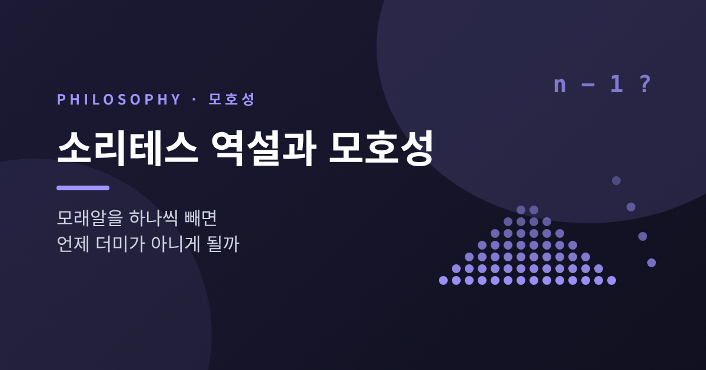

소리테스 역설과 모호성 — 모래알을 하나씩 빼면 언제 더미가 아니게 될까

오늘은 2,000년 넘게 철학자들을 괴롭혀 온 소리테스 역설, 흔히 '더미의 역설'이라 부르는 문제를 이야기해 보려 합니다. 모래 한 알의 차이가 아무것도 바꾸지 못한다면, 더미는 영영 사라지지 않아야 합니다. 이 단순한 퍼즐이 왜 논리학과 법, 의료 기준에까지 이어지는지 차례로 짚어 보겠습니다.
세 줄 요약
- 소리테스 역설은 '한 알 차이는 차이가 아니다'라는 그럴듯한 전제가 터무니없는 결론으로 이어지는 논증입니다.
- 해법은 크게 인식론적 견해, 초평가주의, 정도 이론, 맥락주의, 허무주의로 나뉘며, 모두 무언가를 대가로 치릅니다.
- 성년 연령이나 음주운전 기준 같은 법의 경계선은 모호성을 '해결'한 것이 아니라 '결정'한 것입니다.
■ 모래 한 알에서 시작된 질문
이름은 그리스어 소로스(soros), 곧 '더미'에서 왔습니다. 퍼즐의 원작자로는 기원전 4세기 메가라학파의 논리학자, 밀레토스의 에우불리데스가 꼽힙니다. 거짓말쟁이 역설, 두건 쓴 사람의 역설, 대머리 역설과 함께 그에게 귀속되는 퍼즐 묶음의 하나입니다.
엘레아의 제논까지 기원을 올려 보는 학자도 있습니다. 다만 전해지는 증거는 에우불리데스 쪽이 더 무겁습니다. 그가 왜 이런 퍼즐을 만들었는지는 알려져 있지 않습니다.
이후 이 퍼즐은 무기로 쓰였습니다. 그리스 회의주의자들은 "확실히 안다"고 주장하던 스토아학파를 공격할 때 이 논증을 꺼내 들었습니다. 스토아의 크리시포스는 문답이 경계 근처에 이르면 '침묵하라', 곧 판단을 멈추라고 조언했다고 전해집니다.
흥미롭게도 이 침묵을 어떻게 읽느냐는 지금도 논쟁거리입니다. 티모시 윌리엄슨은 크리시포스를 "날카롭지만 알 수 없는 경계"를 인정한 선구자로 봅니다. 반면 수잔네 보브지엔은 2002년 논문에서 이 해석을 반박하며, 크리시포스가 일부 경계 사례에는 진리값이 없다고 보았을 가능성을 제시했습니다.
■ 논증의 뼈대 — 조건문 연쇄와 수학적 귀납
역설의 구조는 의외로 간단합니다.
- 모래알 1만 개는 더미다.
- 더미에서 한 알을 빼도 여전히 더미다.
- 그러므로 9,999개도 더미이고, 9,998개도 더미이며 … 결국 한 알도 더미다.
이것이 조건문 연쇄형입니다. "1만 개가 더미이면 9,999개도 더미다", "9,999개가 더미이면 9,998개도 더미다" 같은 조건문을 수천 번 이어 붙이고, 전건 긍정을 반복합니다. 한 단계 한 단계는 흠잡을 데가 없습니다.
같은 내용을 한 줄로 압축하면 수학적 귀납형이 됩니다. "모든 n에 대해, n개가 더미이면 n−1개도 더미다"라는 전칭 전제 하나로 결론을 끌어내는 방식입니다.
방향을 뒤집으면 또 다른 얼굴이 나옵니다. "한 알은 더미가 아니다"와 "모든 경우가 더미인 것은 아니다"를 받아들이면, 어떤 n에서는 더미인데 n−1에서는 더미가 아닌 지점이 존재한다는 결론이 나옵니다. 이른바 선긋기형입니다. 이번에는 정확히 한 알이 운명을 가르는 날카로운 선이 생겨 버립니다.
고대철학 연구자 반스(Barnes)는 이런 계열이 성립하는 조건을 셋으로 정리했습니다. 순서가 있는 계열일 것, 첫 원소에는 술어가 참이고 마지막에는 거짓으로 보일 것, 그리고 이웃한 원소끼리는 그 술어에 관해 구별할 수 없을 것. 크리스핀 라이트는 마지막 성질, 곧 미세한 차이에 걸쳐 술어가 계속 적용되는 성질을 관용(tolerance)이라 불렀습니다.
■ 대머리, 아이, 색깔 — 끝없는 변형들
에우불리데스의 또 다른 퍼즐인 대머리 역설은 원래 '팔라크로스(falakros)'라 불렸습니다. 머리카락이 한 올이면 대머리입니다. 두 올이어도, 세 올이어도 대머리입니다. 그렇게 1만 올까지 가도 "한 올 더한다고 대머리가 아니게 되지는 않는다"는 말은 계속 그럴듯합니다.
소리테스는 늘 짝을 이룹니다. 더하는 방향과 빼는 방향이 있고, 긍정 술어와 부정 술어가 있습니다. 대머리와 털 많음, 부자와 가난뱅이처럼 쌍을 이루는 말이면 어디서든 같은 논증을 세울 수 있습니다.
변형은 일상에도 숨어 있습니다. 하루 지난다고 아이가 어른이 되지 않습니다. 이웃한 두 색 칸은 구별되지 않는데, 줄 끝에서 보면 빨강이 주황이 되어 있습니다. "내일 해도 별 차이 없지"라는 마냐나 역설, "과자 한 조각쯤이야"라는 다이어터의 역설도 같은 구조입니다.
한 가지 짚어 둘 점이 있습니다. 중간에 연속체가 있다고 해서 양 끝의 구별까지 무너지지는 않습니다. 분명히 대머리인 사람과 분명히 아닌 사람은 존재합니다. 경계가 흐릿하다는 이유로 구별 자체를 부정하는 것을 '연속체 오류' 또는 '수염의 오류'라고 부릅니다.
■ 경계 사례, 그리고 경계의 경계
철학에서 모호성은 보통 경계 사례로 정의합니다. "어떤 말은 경계 사례를 가지는 정도만큼 모호하다." 스탠퍼드 철학 백과사전(SEP)의 모호성 항목이 내세우는 출발점입니다.
경계 사례란 그 말이 확실히 적용된다고도, 확실히 적용되지 않는다고도 할 수 없는 경우입니다. SEP는 체질량지수와 체중-신장 차트로 볼 때 '비만'의 경계에 걸친 소년을 예로 듭니다.
문제는 여기서 끝나지 않습니다. 황혼은 '낮'의 경계 사례입니다. 그런데 황혼이 정확히 언제 시작되는지도 분명하지 않습니다. '경계 사례'라는 말 자체에도 경계 사례가 있는 셈인데, 이것을 고차 모호성이라고 합니다.
고차 모호성은 여러 해법을 곤란하게 만듭니다. '참 / 불확정 / 거짓'의 3치 논리로 경계를 하나 더 만들어도, 이번에는 참과 불확정 사이에 날카로운 선이 생깁니다. 두 칸을 세 칸으로 늘린다고 선 긋기 문제가 사라지지 않는다는 것입니다.
■ 다섯 갈래의 해법, 다섯 가지 대가
해법은 다양하지만 공통점이 하나 있습니다. 어느 것도 공짜가 아닙니다.
인식론적 견해는 고전 논리를 끝까지 지킵니다. 대표 주자는 1994년 저서 『모호성(Vagueness)』의 티모시 윌리엄슨, 그리고 그보다 앞서 이 견해를 편 로이 소렌슨입니다. 이 견해에 따르면 "한 알 빼도 더미다"라는 조건문 중 어딘가 하나는 거짓입니다. 더미와 더미 아님 사이에는 정확한 경계가 있고, 우리는 그것을 모를 뿐입니다. 윌리엄슨은 그 무지를 '오차 여유' 원리로 설명합니다. 우리의 지각과 기억은 이웃한 사례를 가를 만큼 정밀하지 않아서, 경계 바로 옆에서는 지식이 성립하지 않는다는 것입니다. 대가는 직관입니다. 아무도 모르는 경계를 무엇이 정했느냐는 질문에, 크리스핀 라이트는 이 견해가 '의미론적 신비주의'에 가깝다고 비판했습니다.
초평가주의는 킷 파인의 1975년 논문 「모호성, 진리, 논리」로 대표됩니다. '더미'를 1만 개, 5,000개, 300개 등 허용 가능한 방식으로 다 정밀하게 다듬어 봅니다. 모든 정밀화에서 참인 문장만 '초참'이고, 경계 사례에 대한 문장은 참도 거짓도 아닌 틈에 놓입니다. 이렇게 하면 "한 알 빼도 더미다"라는 관용 전제는 어느 정밀화에서든 어딘가에서 깨지므로 거짓이 됩니다. 대가는 묘한 문장입니다. "어딘가에 경계가 있다"는 초참인데, "바로 여기가 경계다"라고 말할 수 있는 지점은 하나도 없습니다. 윌리엄슨은 이 체계에서 조건 증명이나 귀류법 같은 고전 추론 규칙이 깨진다고 지적했습니다.
정도 이론은 진리에 눈금을 매깁니다. 고겐(1969)과 자데(1975)의 퍼지 논리처럼, 문장은 0부터 1 사이의 참값을 가집니다. 한 알을 뺄 때마다 '이것은 더미다'의 참값이 아주 조금씩 줄어듭니다. 대가는 설명의 부담입니다. '참의 정도 0.73'이 정확히 무슨 뜻인지, 왜 하필 그 숫자인지 답해야 합니다. 빨강처럼 여러 차원이 얽힌 개념을 한 줄 눈금에 세우는 것도 지나친 단순화라는 비판을 받습니다.
맥락주의는 판단하는 상황에 주목합니다. 한스 캄프, 다이애나 라프먼, 스튜어트 샤피로 등이 이 계열입니다. 이웃한 두 사례를 나란히 볼 때는 같은 판정이 맞지만, 판정을 이어 가는 동안 기준 자체가 슬그머니 이동한다는 것입니다. 라프먼은 같은 양이라도 어느 방향에서 접근했느냐에 따라 판정이 달라지는 '이력현상'을 제시했습니다. 그런데 실험 결과는 엇갈립니다. 2013년 에그레와 동료들의 색 범주화 실험에서는 오히려 피험자들이 예상보다 일찍 범주를 바꾸는 '강화된 대비'가 관찰되었습니다. 철학적 대가도 있습니다. 철학자 스탠리(Stanley)는 문장 생략 구문에서 모호어의 해석이 바뀌지 않는다는 점을 들어 이 견해를 반박했습니다.
허무주의는 가장 과감합니다. 1979년 피터 웅거와 새뮤얼 휠러는 "한 알 빼도 더미다"를 끝까지 밀어붙이는 쪽이 옳다고 보았습니다. 그러면 결론은 이렇습니다. 엄밀히 말해 더미도, 대머리도, 부자도 존재하지 않습니다. 논리는 지켰지만 일상 언어의 상당 부분이 빈말이 됩니다.
예전에는 윌리엄슨의 인식론적 견해가 "받아들일 수 없는 결론"으로 여겨졌습니다. 지금은 비교적 주류 견해 가운데 하나로 자리를 잡았습니다. 2025년 개정된 SEP 항목도 어느 하나를 정답으로 선언하지 않습니다. 저는 이 사실이 오히려 정직하다고 생각합니다.
■ 법과 의료가 선을 긋는 방식
철학자들이 경계의 정체를 두고 다투는 동안, 사회는 기다려 주지 않습니다. 누군가는 오늘 계약서에 서명하고, 누군가는 오늘 밤 운전대를 잡습니다. 그래서 법은 선을 긋습니다.
한국 민법은 성년을 만 20세에서 만 19세로 낮췄고, 이 개정은 2013년 7월 1일부터 시행되었습니다. 세계적인 하향 추세와 선거법과의 조화가 이유였습니다. 만 19세 생일 전날과 당일 사이에 한 사람의 판단력이 갑자기 달라지지는 않습니다. 그래도 그날부터 법적 지위가 달라집니다. 개정 당시 보도는 만 19세가 되면 부모 승낙 없이 결혼할 수 있게 된다고 전했습니다.
음주운전 기준도 마찬가지입니다. 2019년 6월 25일부터 면허정지 기준은 혈중알코올농도 0.05%에서 0.03%로, 면허취소 기준은 0.1%에서 0.08%로 바뀌었습니다. 당시 보도에 따르면 0.033%로 적발된 운전자는 이전 기준이라면 훈방 수준이었지만 새 기준에서는 면허정지 처분을 받았습니다. 0.001%포인트 차이가 처분을 가른다는 점에서, 법의 숫자는 선긋기형 소리테스의 결론을 일부러 받아들인 셈입니다.
의료도 비슷한 길을 걷습니다. 2017년 11월 미국심장학회(ACC)와 미국심장협회(AHA)는 14년 만에 고혈압 기준을 140/90mmHg에서 130/80mmHg로 낮췄습니다. 이 한 번의 결정으로 고혈압에 해당하는 미국 성인 비율이 32%에서 46%로 늘었습니다. 지침 작성을 이끈 폴 휠턴은 130~139/80~89 구간의 사람들은 이미 심혈관 위험이 두 배라며, 이 구간을 주로 생활 습관으로 혈압을 낮춰야 하는 "노란불"이라고 표현했습니다.
세 사례에는 공통점이 있습니다. 선이 옮겨졌다는 것입니다. 자연에 원래 있던 선을 발견했다면 옮길 이유가 없었을 것입니다. 경계선은 발견이 아니라 결정이고, 경계 근처에 놓인 사람의 억울함을 감수하는 대신 예측 가능성과 공정한 집행을 얻는 거래입니다. SEP의 모호성 항목이 법 언어의 모호성과 판사의 재량, 그리고 음주운전을 예로 따로 다루는 것도 이 때문일 것입니다.
물론 숫자 선만이 답은 아닙니다. 일부러 넓게 남겨 둔 법률 용어는 개별 사건에서 판사가 판단할 여지를 줍니다. SEP는 이런 '전략적 비결정성'도 모호성의 쓸모로 소개합니다. 선명함과 유연함 사이에서 어디에 무게를 둘지는 영역마다 다른 선택입니다.
■ 일상의 판단에 남기는 것
이 역설이 일상에 주는 교훈은 두 갈래입니다.
하나는 경계의 흐릿함을 핑계로 삼지 않는 태도입니다. "한 번쯤 괜찮겠지"가 쌓이면 습관이 됩니다. 작은 차이가 무의미해 보여도, 그 합은 분명히 의미가 있습니다.
다른 하나는 선 바로 옆에 있는 사람을 대하는 태도입니다. 기준선을 0.001 넘긴 사람과 0.001 못 미친 사람은 실제로 거의 다르지 않습니다. 선은 지키되, 선이 세상의 본모습이라고 착각하지 않는 것이 필요합니다.
마지막으로 한 가지만 덧붙이겠습니다. 소리테스 역설은 아직 '풀린' 문제가 아닙니다. 각 해법은 무엇을 지키고 무엇을 내줄지 고른 결과입니다.
"경계가 흐릿하다고 해서, 구별이 무의미해지는 것은 아니다."
모래 한 알로 더미가 무너지느냐고 물으신다면, 저는 이렇게 답하겠습니다. 한 알이 무너뜨리는 것은 더미가 아니라, 우리가 말에 기대했던 지나친 정밀함이라고요.
참고 자료
- Diana Raffman & Dominic Hyde, "Sorites Paradox", Stanford Encyclopedia of Philosophy (2025-08-26 개정) — https://plato.stanford.edu/Entries/sorites-paradox/
- Dominic Hyde, "Sorites Paradox", SEP Spring 2003 판 — https://plato.stanford.edu/archives/spr2003/entries/sorites-paradox/
- Roy Sorensen, "Vagueness", SEP (2022-06-16 개정) — https://plato.stanford.edu/ENTRIES/vagueness/
- Susanne Bobzien, "Chrysippus and the Epistemic Theory of Vagueness", Proceedings of the Aristotelian Society 102 (2002) — https://philarchive.org/archive/BOBCAT
- Crispin Wright, "The Epistemic Conception of Vagueness", The Southern Journal of Philosophy 33 Suppl. — https://crispinjwright.com/wp-content/uploads/2019/04/wright-1995-the-epistemic-conception-of-vagueness.pdf
- Egré, de Gardelle & Ripley, "Vagueness and Order Effects in Color Categorization", Journal of Logic, Language and Information 22(4), 2013 — https://research.monash.edu/en/publications/vagueness-and-order-effects-in-color-categorization/
- Wikipedia, "Sorites paradox" — https://en.wikipedia.org/wiki/Heap_fallacy
- 뉴시스, 음주운전 단속 기준 강화 시행 (2019-06-25) — https://www.newsis.com/view/NISX20190625_0000690614
- 경북매일, 제2 윤창호법 시행 첫날 (2019-06-26) — https://kbmaeil.com/article/201906260254368
- 법무법인 지평 뉴스레터, 민법 개정(성년 연령 하향) (2011.2) — https://jipyong.com/newsletter/31_201104/data/recent.html
- 서울신문, 새해 이렇게 달라집니다 (2013-01-01) — https://m.seoul.co.kr/news/2013/01/01/20130101018004
- 서울신문, 2013년 '만19세' 되면 부모 승낙없이 결혼 (2011-02-19) — https://m.go.seoul.co.kr/news/2011/02/19/20110219001020
- American College of Cardiology, "High blood pressure redefined for first time in 14 years" (2017-11-13) — https://www.acc.org/about-acc/press-releases/2017/11/13/15/35/high-blood-pressure-redefined-for-first-time-in-14-years-130-is-the-new-high